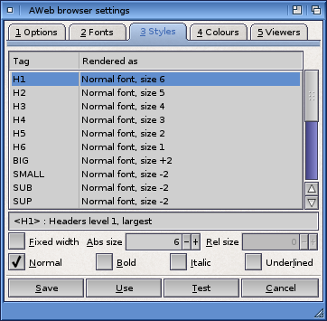

Browser settings: Styles

Styles list
For each HTML style tag you can configure which font type (normal of fixed-width) and size should be used, and the style to use.
The list contains all relevant tags and the current styles for that tag. Below the list is a brief description of the meaning of the currently selected tag.
Fixed width
Select this checkbox if you want this tag to be rendered using the fixed-width font instead of the proportional font.
Abs size
For header tags (<H1> through <H6>) you can enter here a font size from 1 to 7 here. Size 1 is smallest, 7 is largest.
Rel size
For all other tags, you can enter a relative size here. Valid relative sizes are -6 through +6. The actual size used for this type of element will be the current normal size in the document, adjusted by this number. Note that the resulting size will never be less than 1 or greater than 7.
Normal, Bold, Italic, Underlined
Use these checkboxes to pick the rendering style for the current type of element.
 Fonts
Fonts  Settings requesters
Settings requesters  Colours
Colours